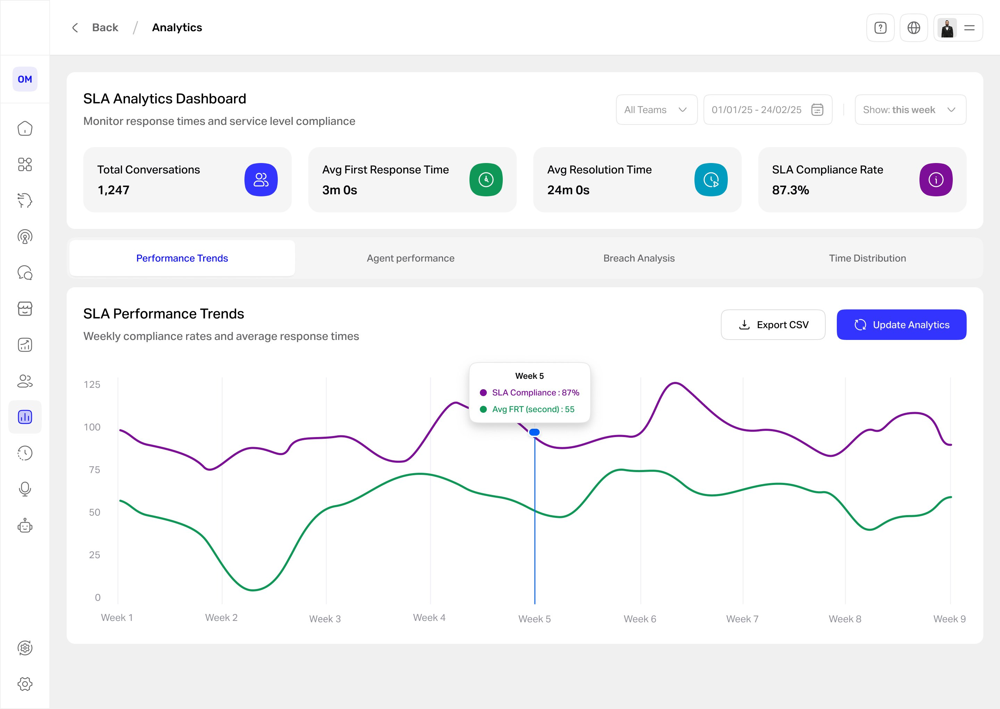

SLA data that reads at a glance.
Support leaders were piecing SLA health together from exports and spreadsheets. I designed an analytics dashboard that surfaces the metrics that matter, compliance, response times, and weekly trends, in one glanceable view, with filters and export built in.

Support managers were flying blind on SLA.
WideBot's platform handled thousands of customer conversations, but the people responsible for service levels had no single place to see how they were doing. SLA health lived in raw exports and manual spreadsheets, so a breach trend often surfaced only after it had become a problem. As the solo product designer, working with a PM and engineers and interviewing support team leads, I designed an analytics dashboard to make SLA performance visible in real time.
What wasn't working
- No real-time view. Leaders couldn't see conversation volume, first-response and resolution times, or SLA compliance without pulling the data by hand.
- Trends hid in spreadsheets. Weekly patterns and emerging breaches were buried in exports, so problems were caught late.
- No way to slice or share. Filtering by team or date, or producing a clean report, meant manual work in Excel every time.
By the time an SLA problem showed up, it had usually already cost them.
Managers didn't need more data. They needed it at a glance.
Talking to support leads, the pattern was clear: they didn't want to dig, they wanted to glance, spot a dip, and act. So the design bet was glanceability over depth: lead with the few KPIs that matter, show the trend as one readable chart, and keep everything else a tab or a filter away.
Glanceable beats comprehensive.
Four decisions that made the data readable
Lead with four KPIs, not forty
The header is only the numbers a manager checks first: total conversations, average first response, average resolution, and SLA compliance. Everything secondary lives below or behind a tab, so the top of the page answers "are we okay?" instantly.
One trend chart, two lines
Weekly SLA compliance and average first-response time share a single chart with a hover tooltip, so the relationship between speed and compliance is visible at a glance instead of split across two views.
Color as a system, not decoration
Each metric keeps a consistent color, green for response time, purple for SLA, across the cards, the chart, and the tooltip. I considered a single accent palette, but distinct metric colors cut the effort of cross-referencing the numbers.
Tabs for depth, filters for focus
A modular tab layout (Trends, Agent Performance, Breach Analysis, Time Distribution) keeps the page glanceable while making deeper cuts one click away, and team and date filters plus CSV export let leaders focus or share without opening a spreadsheet.
What the manager sees
The dashboard answers the headline question first. Four KPIs across the top, total volume, average first response, average resolution, and SLA compliance, give the state of play at a glance, while the four tabs keep the deeper cuts one click away. The weekly trend chart carries SLA compliance and average response time on two lines, and a hover tooltip turns any week into exact numbers, so a dip becomes a specific, actionable figure. Team and date filters plus CSV export sit in reach, so a manager can focus or share without opening a spreadsheet.
How I'd judge the design
| Metric | Target | Why it matters |
|---|---|---|
| Time to spot a weekly SLA issue | 30% faster | Speed of insight |
| Manual SLA reports pulled by leads | ≥ 50% fewer | Efficiency |
| Weekly active use by support leads | ≥ 80% | Adoption |
| Time to read the core KPIs | under 10s | Glanceability |
| Dashboard satisfaction | ≥ 4/5 | Experience |
What I'd expect to change
- Faster reaction to SLA dips, because trends are visible weekly instead of after the fact.
- Less manual reporting, with filters and export replacing spreadsheet work.
- A shared view of performance across the support team, from one source.
SLA health went from a monthly export to a daily glance.
If I did it again: I'd validate the four header KPIs with real managers to confirm they are the right four, test whether the two-line chart reads more clearly than two separate charts, build the Agent Performance and Breach Analysis tabs to the same standard, and instrument which views managers actually open so the layout earns its place.
Glanceable vs. complete. Leading with four KPIs and one chart means deeper data sits behind tabs, so a power user clicks more. I accepted that because the daily job is a glance, not an audit, and the depth is still one tab away.